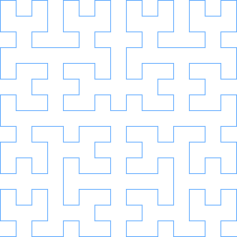
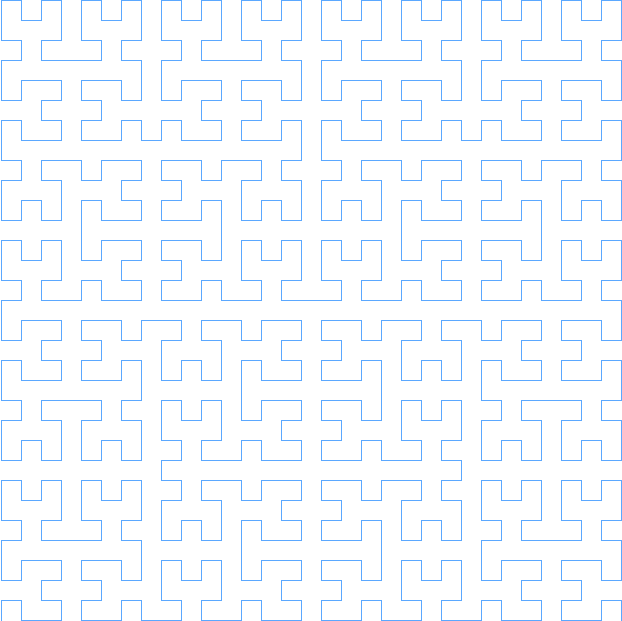

My Attempt at Hilbert Curves
A while ago, I watched this youtube video. Basically it describes a Hilbert curve, is really just a very specific way to lay out an infinitely long string into an infinitely large square. Neither of these actually have to be infinitiely long, but they are in the original version of Hilbert curves. I, personally, was a huge fan of this concept. Since I watched the video, I've been trying to think of a cool application of Hilbert Curves to anything in the real world - so far I haven't. But, I'm a big fan of the math and the concept, so I decided to make a tool for other people, who are hopefully more creative than me and can actually think of an application. The tool itself does basically one thing - it makes hilbert curves (duh). It also provides tools to visualize these in a GUI app and output to an image. However, the main focus is making the curves themselves (and providing methods to access that information, but we'll talk about that later). I tried to make this really fast.The first problem we run into is the time complexity of generating a hilbert curve of order n. Basically, a hilbert curve of order n fills a 2^n by 2^n space. Thus, it must run a line through (2^n * 2^n) pixels, or 2^2n pixels, which gives us a time complexity of O(2^n), if we just generate one pixel at a time like this implementation from Princeton. That sucks. However, if you watch the video from above, you'll notice that hilbert curves are actually quite elegantly constructed from repeating quadrants. Let me explain:
First, we take a hilbert curve of order 1:
Then, we'll copy it into 4 different quadrants, and flip the bottom 2 quadrants - the bottom left flips over y=x, the bottom right flips over y=-x.
Then we can just connect the lines, and we get a Hilbert curve of order two!
By repeating the at same process, we can create Hilbert curves of any order:
Order 2
Order 3

Order 4

Order 5
That repetition is pretty cool, but how can we use it to escape from that awful O(2^n) time complexity? Well, if you're a little CS-minded, you're probably thinking what I thought: caching! The caching setup I came up with actually utilizes 5 seperate lists (definitely hurts the memory complexity, but everyone knows a low time complexity is cooler). In order to understand what each of these lists are, lets think a little bit more closely about what exactly we do when we construct a hilbert curve of order n:
1. We generate 4 Hilbert curves of order n-1.
2. The first hilbert curve in our set is the bottom left (remember what the order 1 curve looked like!). This one we flip over y=x (swap x and y coordinates)
3. The next hilbert curve in our set should be the top left (again, look back at the order 1 curve!). This one, we just shift up by 2^(n-1).
4. The third hilbert curve should be the top right hand corner. It undergoes 2 translations, a shift up by 2^(n-1) and a shift right by 2^(n-1).
5. the fourth curve should be the bottom right hand corner. It undergoes 2 transformations - first, it's flipped over y=-x, then it's shifted right by 2^(n-1).
If you look at steps 2-5, you'll notice that for each hilbert curve we make of order n, we need four hilbert curves of order n-1 that have undergone various translations. That means we can make 4 caches - one for each transformation! This means that if we get a cache hit on a curve of order n-1, we can assemble a curve of order n in constant time, because we're basically just sticking some puzzle pieces together! Let's look at what our caches look like so far:
BL (bottom-left) | flip over y=x
TL | shift up by 2^(n-1)
TR | shift up by 2^(n-1), shift right by 2^(n-1)
BR | shift right by 2^(n-1), flip over y=-x
BL (bottom-left) | flip over y=x
TL | shift up by 2^(n-1)
TR | shift up by 2^(n-1), shift right by 2^(n-1)
BR | shift right by 2^(n-1), flip over y=-x
No Transforms | N/A
List<Point> build(int order){
if(order==1){
return [(0,0),(0,1),(1,1),(1,0)];
}
}
Next, let's do check for cache hits for the given order, assuming that we can't build a curve of order n without first making a curve of size n-1 (which is very fair, given that this function is recursively defined):
List<Point> build(int order){
if(order==1){
return [(0,0),(0,1),(1,1),(1,0)];
}
if(no_transforms.length >= order){
return no_transforms[order-1]
}
}
Now let's finish this up with some functions we wish we had (don't worry, we'll actually make them later) (also in my fake language here, the + operator concatenates lists)
List<Point> build(int order){
if(order==1){
return [(0,0),(0,1),(1,1),(1,0)];
}
if(no_transforms.length >= order){
return no_transforms[order-1];
}
generated_curve = build_bottom_left(order-1) +
build_top_left(order-1) +
build_top_right(order-1) +
build_bottom_right(order-1);
no_transforms.append(generated_curve);
return generated_curve;
}
Okay - let's make those functions we wish we had now, but with a secret ingredient (that's right, it's more functions we wish we had!).
They follow pretty much exactly the same form as the one above, except we apply the transforms to everything, and (of course) we'll check a different cache.
List<Point> build_bottom_left(int order){
if(order==1){
return [(0,0),(1,0),(1,1),(0,1)];
}
if(bl.length >= order){
return bl[order-1];
}
generated_curve = build(order);
//assume we pass by reference for this function
//(I can just do this without saying anything because this is a fake language I made up)
flip_for_bottom_left(generated_curve);
bl.append(generated_curve);
return generated_curve;
}
List<Point> build_bottom_right(int order){
if(order==1){
return [(1,0),(0,0),(0,1),(1,1)];
}
if(br.length >= order){
return br[order-1];
}
generated_curve = build(order);
flip_for_bottom_right(generated_curve);
//using python exponentiation syntax
shift_right(generated_curve,2**(n-1));
br.append(generated_curve);
return generated_curve;
}
List<Point> build_top_left(int order){
if(order==1){
return [(0,0),(0,1),(1,1),(1,0)];
}
if(tl.length >= order){
return tl[order-1];
}
generated_curve = build(order);
//using python exponentiation syntax
shift_up(generated_curve,2**(n-1));
tl.append(generated_curve);
return generated_curve;
}
List<Point> build_top_right(int order){
if(order==1){
return [(0,0),(0,1),(1,1),(1,0)];
}
if(tr.length >= order){
return tr[order-1];
}
generated_curve = build(order);
//using python exponentiation syntax
shift_up(generated_curve,2**(n-1));
shift_right(generated_curve,2**(n-1));
tr.append(generated_curve);
return generated_curve;
}
Okay. Now we just have to make some simple transformation functions! Honestly, if you've made it this far, you definitely understand how to do three out of the four transformations
we need, so I'm not going to write those out. The one that is interesting, is the flip_for_bottom_right(List<Point> curve) function. This is because Hilbert curves occupy a very interesting spot
in the cartesian plane: Q1, and Q1 only - no negative numbers allowed. However, if we do the normal method of flipping over y=-x (flipping x and y and then negating them), we get a bunch of negative numbers.
These are pretty bad for a system which requires only positive numbers. If you've taken linear algebra, the solution is probably pretty simple to you: change the basis, execute the transform, and change the basis back.
This is pretty much what we do. First, which shift each coordinate left and down by 2^(n-1) - 0.5. This centers the curve on (0,0), almost. We also shift left by the minimum X coordinate, and down by the minimum Y coordinate.
We can keep track of these as we build curves, so that we don't have to do a linear search for each transformation. After we've centered the curve, we do the standard transformation for flipping over y=-x - exchange x and y, and negate the coordinates.
Finally, we have to change the basis back to our original one, so we add back the values which we originally subtracted. Below, I condensed all this into a couple one liners.
public void mirrorRight(){
for(int i = 0; i<points.length; i++){
int px = (int)((-(points[i].x - minx - (dim/2 - 0.5)))+ minx + dim/2 - 0.5);
int py = (int)((-(points[i].y - miny - (dim/2 - 0.5)))+ miny + dim/2 - 0.5);
points[i] = new Point(py ,px);
}
}
And that's pretty much it! If you want to check out my code, here's the instructions:
javac App.java to compile
java App to run in a GUI window, press space to increase the order of the hilbert curve
java App [OPTIONS] - Options presented Below
-f FILENAME.png (REQUIRED) | File to output image to - will always be png formatted
-o ORDER (REQUIRED) | order of the hilbert curve
-s SCALE | amount to scale the hilbert curve coordinates by before drawing (default is 10)
-c COLOR | A hex color code (without the hashtag) to draw the line the color of - default is ff0000 (red)